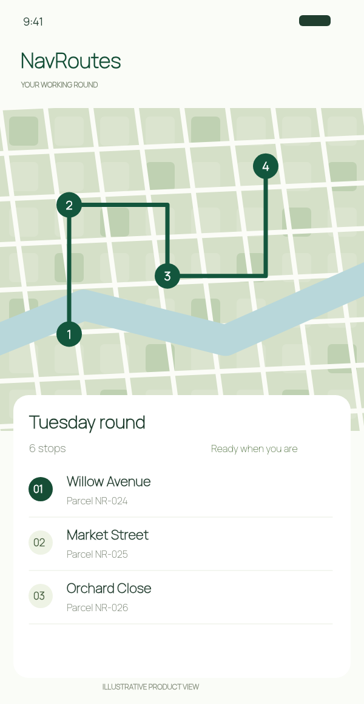
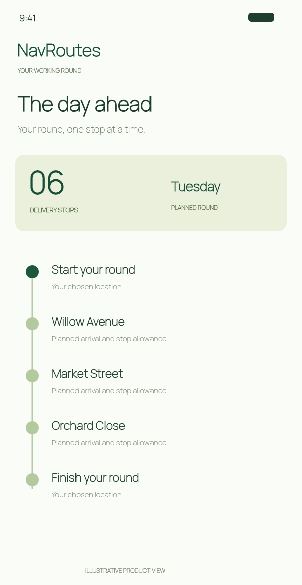
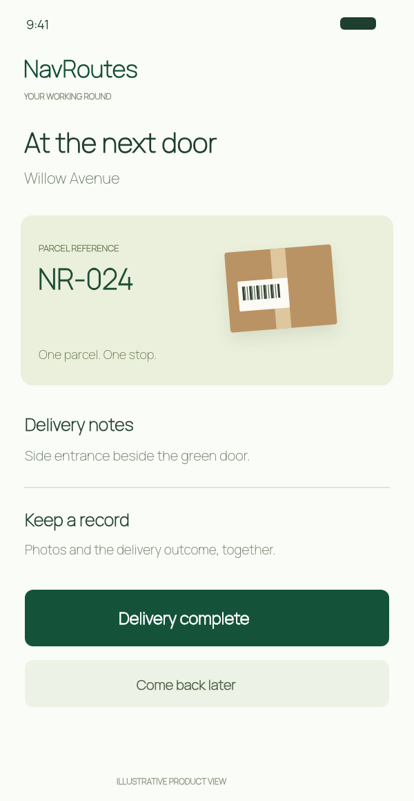

Plan the whole round
Add a Start, ordered delivery stops and a configured End. Choose current location or a saved address, then optimise the sequence and re-optimise remaining work when the day changes.
NAVROUTES / FOR DELIVERY DRIVERS & COURIERS
Every stop, in order.
NavRoutes is a multi-stop route planning app for delivery drivers and couriers. Optimise your stop order, keep parcel details handy and record each delivery.

THE NAVROUTES APP
From planning a courier route to recording the last delivery, keep the stops, schedule and parcel details together. These app-style illustrations explain the features without revealing the actual interface.
Put delivery addresses in order, choose your start and finish, and re-optimise remaining stops when plans change.

Review planned arrival times and allow time at each delivery stop. Know how the round fits together before setting off.

Match parcel references to stops and record completed, failed or deferred deliveries. This is your delivery record, not live carrier tracking.
Illustrative app views, not screenshots. Features vary by platform; Android-specific imagery is not shown.
THE FULL DELIVERY TOOLKIT
NavRoutes keeps the practical parts of a delivery round together, from the first address you add to the record you review afterwards.
Add a Start, ordered delivery stops and a configured End. Choose current location or a saved address, then optimise the sequence and re-optimise remaining work when the day changes.
Search addresses, use recent places, choose your current location, scan a single address or speak a destination. On compatible iPhones, order-page import can turn reviewed paperwork into candidate deliveries.
Review route distance, driving time, planned arrival and departure at each stop, time allowed at the delivery, and the planned finish of the round.
On iPhone, choose NavRoutes Drive where available or hand off each destination to Apple Maps, Google Maps or Waze. Return to NavRoutes to record what happened; opening navigation never marks a delivery complete.
Keep parcel references, recipient details, driver notes and delivery instructions beside the stop, so the next address is connected to the right item.
Organise parcel-reference and delivery-proof photos, with support for replacing, reordering, viewing and deleting images. Damage and signature categories are supported where available.
Mark a stop completed, failed, skipped or deferred, add a reason or evidence, reset a status, and continue with the remaining route without pretending the day went perfectly.
Review saved routes, inspect stop outcomes and route totals, copy stops into a new run, and export route records as CSV or PDF where supported.
Choose a navigation provider, units, planned time at each stop and toll preference. Global defaults seed new routes, while route overrides apply only to the current round.
Use the available language selector and keep your route workflow, settings and records in the supported app language for your device.
Resume a saved route after leaving the app, returning from external navigation or reopening the app, with stop states and route settings preserved.
Try the free route limit, then manage the available subscription through the app store when your delivery round needs more addresses or features.
Capabilities and limits vary by platform and release. Android visual material is deferred while the app is in development. Current iPhone free access counts 10 addresses including Start and End; subscription limits and prices are shown in the app.
01 / ADDRESS ENTRY & ROUTE OPTIMISATION
Add delivery stops with address search, recent addresses or camera scanning. Optimise your multi-stop route, choose where to finish and review the planned schedule.
Three deliveries. Every detail together.
Not working from a list? Search, speak or scan a single address on iPhone.
See the day ahead. Planned arrivals include your time allowance at each stop.
02 / AT THE NEXT DOOR
The label gets you to an address. The little details help you make the delivery. Keep the parcel reference, recipient and notes beside the stop.
Match parcel NR–024 to the next stop, without searching through the rest of the round.
NR–024 / One parcel
The reference stays with the stop.
03 / WHEN THE DAY CHANGES
Not every delivery goes to plan. Record what happened, defer a stop or re-optimise the work still ahead.
Mark the stop complete. Keep delivery photos separate from parcel-reference photos.
ONE LESS THING TO KEEP IN YOUR HEADDefer a stop when the timing isn’t right. Keep it visible while the rest of the round moves on.
A CHANGE OF PLAN, STILL ACCOUNTED FORSave the outcome and reason. Finish with a record of what actually happened.
THE WHOLE PICTURE, NOT JUST THE CHECKSTUESDAY / ROUND RECORD
04 / AFTER THE LAST STOP
Review past routes, copy stops into another run, and export PDF or CSV reports on iPhone. Less piecing the day back together later.
A few things worth knowingBEFORE YOUR NEXT ROUND
The current iPhone free plan allows up to 10 addresses, including Start and End. Larger routes require a subscription; check the app for current local pricing. Final launch entitlements remain subject to verification.
Order-page import requires iOS 26 or later, an Apple Intelligence-capable iPhone, Apple Intelligence enabled and its model available. Review the extracted addresses before adding them. Single-address scanning is a separate feature.
On iPhone, use Apple Maps, Google Maps or Waze for external navigation. NavRoutes sends one destination at a time. Return to NavRoutes to record the outcome. Android uses supported external Google Maps or Waze navigation; features vary by platform.
No. These are original illustrations that explain the delivery workflow without showing the actual app interface. The sample addresses, parcel references and records are fictional.
FROM FIRST PARCEL TO FINAL DOOR
Route planning for the person doing the delivering.